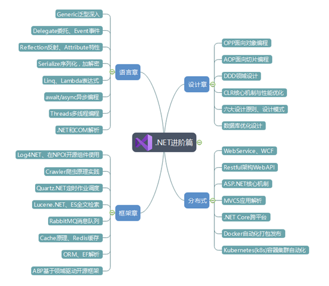

知识只有经过整理才能形成技能
一、烦恼丝1、技术池太浅2、干货太少3、记性太差二、章节分布1、大纲2、简介二、后话
作为开发者，工作了几年，也总觉得技术栈和刚毕业区别不大，用的技术还都是N年前的，每每看到新东西，也只心里哇塞惊叹一下，然后就回归于忙碌。怪自己的技术池太浅，热门的令人称奇的技术也都是在其他巨人的肩膀上产生，但自卑还没够到巨人肩膀，便觉得新技术（相对于自己的技术程度）离我们好远，对它也无能为力，不了解能否解决当前的痛点？应用成本高吗？就像爬山1W个台阶，站在9K台阶处的人就会觉得容易些，站在1k台阶处的就感觉高不可攀。迈出第一步，跟上前面登山的人。
经常会看见公司框架里那些前人写的代码，还是.NET早些版本1.0，2.0时代的，虽然语法还比较low，但设计却让人惊奇，身边也少见架构师可以求问学习。咱是从事GIS行业开发，可能着重在于GIS功能的开发，其实有点本末倒置。GIS只是开发中的一个插件，我们的根本应该还是要先把.NET玩溜，很多像性能瓶颈、版本兼容跨平台等问题也就迎刃而解。
有时候看不懂的设计代码就去查，当下明白了，某天又忘记了，也不会使用。网上资源太多只能用来解决某个特定问题，如某个bug，某个安装，这是你快速解决遇到的某个问题的好途径。系统的提升还是需要有个全局系统的知识脉络，像书籍，课程。在系统性的学习之后，会对.NET有个相对全面认识，工作中遇到的一些棘手问题，也都有对应成熟解决方案，根本不会说解决不了，只能曲线求国。很简单的功能设计因为认知不足，浪费大量的人力，设计出庞大难以维护的系统，这是开发者最不能期许的。还有目前.NET很热很成熟的框架都用到高级语法（仅区别于基本语法），反射啊，委托啊、异步多线程啊，还有很多令人拍案叫绝的设计思想。不整明白以后更加忐忑，对新技术浅尝辄止也不会剖析更不敢应用到实际项目中，永远只是个旁观者，只在山脚下叫苦。
想起大学时不务正业没正经上过几次课，毕业前开始有点恍惚，逼着自己系统学习了下C#基础，虽然轻松毕业就业，就业后做过.NET的CS/BS开发，做过Java的BS开发，但都是了解了基本语法就提枪上阵了，靠运气躲过技术难题。那时没想到要整理，好多书籍课程资料也因搬家都丢弃了。有些时候忘记的知识点还要去网上查找，一下找着正确的还好，找不到又还看到博客论坛还在转发一个错误的示范（我知道有可能只是环境不同没能像文中描述那么顺畅），心里就开始mmp了。
所以写技术文章，一定要经过验证，交代自己的验证环境。
这次准备把自己整理时候的知识点记录下，按俗套姑且取名.NET进阶篇，以便自己以后查阅，好多东西你一定做过，但你就是暂时想不起来了。烂笔头记一下，想不起来也好找。自己动手记录，会不自觉看很多遍，修改很多遍，思路也会更加清晰。作为职业Coder，说实话写文章方面文笔就糙了点，大多时候写字随心所欲，与其咬文嚼字，不如多关注些自己知识的盲区。但会尽量要求代码比文字严格精炼，一行代码胜千言就更好。
我会在整理了一些知识点的时候发出来，连着白瞟好几集的感觉应该很爽。整个进阶篇的章节分布如下（后面估计会调整，大章节分布不会变，可能纳入些新的东西）。

我用了一个新的轻薄本（本来买来专作开源GIS的，都快落灰了，如果能坚持把这一系列写完，它也算立大功了），宇宙最强IDE-VisualStudio 2019（在线安装比较慢，离线包有20G左右，后面会上传），在周末假期做拆解，合并，验证，整理工作（原谅咱工作日很难跳出工作状态，下班有空也多是关注工作中遇到的问题）。一个知识点的相关书籍课程拆出来，为了保证质量，可能需要挺长时间。希望做到一个知识点看这一篇就够了的地步。直接复制安装可用的框架代码咱还没能力整理出，此篇更多的是指导思想、原理解析，以点带面，当然会用些经典小例子，所以别太指望能直接复制粘贴到自己系统中F5就能运行成功。定位是高度总结概括，面向抽象，比如像正则可能就不会介绍，咱也记不住。到了应用的细节地方可能还需要去查阅详尽的资料，但知道怎么用，怎么查，出问题也不慌张，面对新奇热门的框架也不怵，这是咱期望的。
语言章会让你认识C#一些高级的语言特性原理，作为后面的铺垫，设计框架离不开这些东西。设计章总结常用的设计套路，不敢说融会贯通下笔如有神，起码会让你编码过程中能嗅出设计的坏味道，然后着手重构，重构的过程，会慢慢发现自己的设计竟然和成熟框架设计思想越来越像、如出一辙。框架章会了解常用框架的原理应用，工作中可以快速选型和应用，也对目前开源.NET环境深入认识。
当然，做的越多错的越多，没有信心说没有错误，更欢迎读者能指出来。一起进步，少走弯路，促进行业发展，社会进步。没错，我的梦想是推进世界进步。我们能遇到的每个问题都在某个地方被某人解决过，交流是一种快速且有效的处理问题方式。读书旅行交友都是在交换着我们对世界的认知，了解的越多，被你掌控的事物就越多。我们随时都有Plan B，还怕啥。
其实语言层面很多.NET开发者不愿承认，Java热度确实总比C#高，以前也觉得.NET挺low的，给人总是后知后觉的感觉，毕竟商业运作嘛，要经过很多过程抉择的。一方面可能与我从事的行业相对互联网比较闭塞有关，实际用到的.NET技能也不是很多，也没有大而全的认识。另一方面也与我慵懒佛系的性格有关吧，不争第一，凡事只做第二就好。千年老二其实挺好的，恰到好处，有余力有余地。
所以也没想过切换自己的主语言，如果需要Java开发者，一个优秀的.NET开发者肯定也能冒名顶上。语言真的是一通百通，设计思想更是放之四海而皆准，只是自己主语言开发起来会更顺手罢了，就像经常开自己家的车会比较顺手一样。一般开发者都会不止一种语言。没有最好的语言，适合自己的就是最好的。你第一次学习接触的语言理应当做你的母语，如果你问我什么是世界上最好的语言？那我不知道，我只知道C#也会是之一。
如果手机在手边，也可以关注下vx：xishaobb，互动或获取更多消息。当然这里也一直更新de。